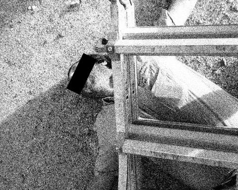

RGC POWERLESS AGAINST BIRDMAN
L. Producto
Special to The Loudmouth
STARRCONIA -- In a world without superheroes, RGC is no exception. It's got none.
Early Monday morning the bustling South Texas metropolis, electric power faltered in every home, business and rat hole to be found. And while the city elders scrambled to find the instructions left behind by a now-deceased former county judge, the Rattler-Man could not be summoned to save the day from chaos.
Instead, a long-forgotten relic from the past was used to signal the city's last hope in a time of crisis. A dozen 9-volt batteries were connected to give the gizmo once given the moniker "R.A.L.P.H." and as it fried its last circuit, a giant penguin was cast on the dark cloud covering the unlit populace.
But it was all for naught.
The intended receiver of that distress signal, SuperÛÛÛÛ, was "too busy" purchasing gasoline to power his own generator in order to recharge his portabe devices.
"It's not like we get paid to be superheroes or nothin' like that," stated a fully-charged SuperÛÛÛÛ as he prepared to foil another dozed fishsticks to throw into his hastily assembled solar-powered Easy-Bake. "Minimum wage deserves minimum effort. Plus I already know what the problem with the electricity is."
Long gone are the days where masked and caped crusaders answered the call for help in this region. The crumbled dingy structures they called home have been replaced with 21st century chain bistros and the tough streets where heroes honed their abilities have been taken down a few notches since the great Prince and the Revolution cultural revolt of the early 90s changed the superhero spectrum forever.
A message dispatched by authorities late in the afternoon told the tale of giant birds, bird-men, power plays and power outages.
The once mighty crimefighter smirked a crooked smile, straightened a portrait of his old canine partner and spit on his box stoop.
"Somebody pulled the plug," ÛÛÛÛÛ said.
-------------------------------------------------------

ÛÛÛÛ CLIMBS CORPORATE LADDER
UNTIL HE HITS GLASS CEILING!
L. Producto
Special to The Loudmouth
OUTSIDE THE BOX, STARRCONIA -- Local businessman and amateur Cirque du Solaile understudy ÛÛÛÛ ÛÛÛÛÛÛ has a message for the younger generation, but human decency and a court order forbids us from mentioning it in these pages.
But what we can tell you is that the self-made internet entrepreneur has been to the edge, and there he stood and looked down. Tired of the Rat Race, ÛÛÛÛÛÛ climbed an actual "corporate ladder" (if Sears-Roebuck is still incorporated) and made his way up in a hurry.
Not quite to the actual final step, he was suddenly stopped by a large crystal barrier, which not only stopped him from continuing upward, it also pushed him back to his starting point.
"I looked up to the skies, where I heard a 'crack,' and then I saw one," said a startled ÛÛÛÛ ÛÛÛÛ, who was not present at the scene, but whose name this reporter remembers from years ago as a comic presence in ÛÛÛÛ ÛÛÛÛÛÛ-related stories. "I think the problem was that in his haste to reach the top, he was caught with his pants down somewhere along the way."
ÛÛÛÛÛÛ was rushed to a local hospital, where he regained consciousness only to slip back to sleep after accidentally overhearing the emergency staff discussing the disappointing current season of "True Blood."
Dr. ÛÛÛÛÛÛÛ ÛÛÛÛÛÛÛÛ, who also was a regular "source" for this reporter all those years ago, and is now an actual emergency room doctor at said hospital, might have said "the little bastardito should have known he was playing with fire, and he was going to get burned."
ÛÛÛÛÛÛÛÛ said ÛÛÛÛÛÛ had lit a portable welding torch, which he ungracefully landed on top of after his fall from Grace.
"We did all we could, but it took us four hours just to get the smile off his face," ÛÛÛÛÛÛÛÛ said.
Grace, as it turns out was not a real person, but rather ÛÛÛÛÛÛ's favorite avatar from a certain Web site the publication will not click on ever, ever again (we promised the boss, but you can find it on our Twitter feed).
Oh, and that message he has for the younger generation? "Look before you leap." A real stretch, yes, but consider that ÛÛÛÛÛÛ now only speaks in fortune-cookie speak, a side effect that still lingers from his fall.
What plans does he have for the future? He spoke in short, measured sentences.
"You will be rewarded for your generosity," he said. "A long forgotten family member will visit you soon."
The hospital staff would not allow ÛÛÛÛÛÛ to continue his sino-culinary philosophy, but he managed to give this reporter one final flash of wisdom: "7 21 35 42 48 65."
-------------------------------------------------------
THE TROUBLE WITH TWITTERERS
L. Producto
Special to The Loudmouth
Ace photographer and one-time triathlon medalist ÛÛÛÛÛ ÛÛÛÛÛÛ has made up her mind: Smurfs know what they're talking about. But more importantly, they know what they're texting about.
ÛÛÛÛÛÛ has been tweeting for some time now, and she's felt confined by the 140 character limit imposed by the social media outlet.
"Like, how am I supposed to tell you all about my past half hour if I have less than a sentence of space to spew it out?" she complained. "There's no way @ÛÛÛÛÛÛÛÛ can publish he most inner thoughts in that short a line."
She suggests following the Smurf's technique of replacing everyday words with the "Smurf" moniker.
"I'm not saying, type 'Smurf the smurfing smurf at the smurf before smurf smurfs the smurf,' that's just silly," she said. "I'm saying use the internet speak that's already a part of every day tweeting, and replace individual letters with the letter 'S', and then magic will happen."
WTF, you may ask? No, you really meant WTS -- "WHAT THE SMURF?"
By replacing the nouns in internet speak abbreviations, soon enough every twitterer will understand the nuances of the letter 'S' as it moves across the internet.
"LOS," ÛÛÛÛÛÛ said (laughing out Smurf). "Soon, we'll all be ROTSLOSO and everyone will understand me when I tell them 'ISASAINGTSAS'!" (I'm smurfed as smurf and I'm not going to smurf it any smurf!)
-------------------------------------------------------